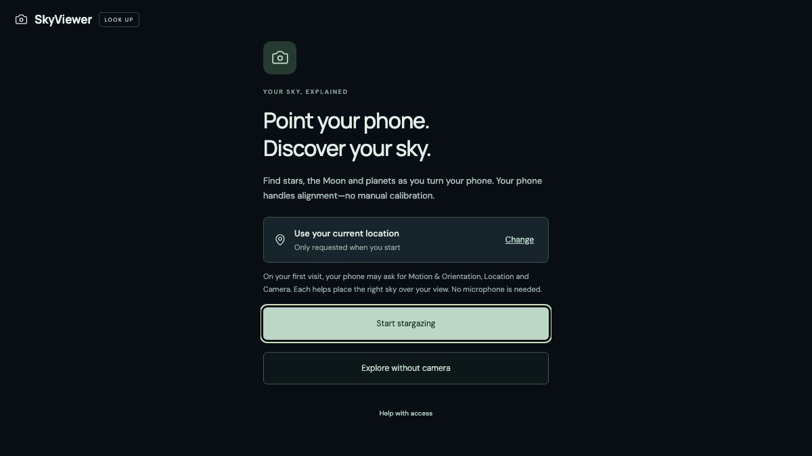

side projects
Things I build after hours.
Small, slightly over-engineered tools and toys. These days I build most of them with AI as my pair programmer: I describe it, check it, and keep going until it feels right.
Projects

Mugi's House
My smart home dashboard, drawn as a cosy little room. The fan, lights and aircon are real. The dog isn't.

SkyViewer
Point your phone at the sky to find stars, the Moon and planets through your camera. Free, open source, no install.
Google Maps List Filter
Search and filter your saved places in Google Maps lists by name, type, price or notes.
TailVNC
A small, dependency-free VNC client for iPhone and iPad, made for Tailscale and private networks.
Codex on Intel Macs
Repackaged the Codex desktop app to run on Intel Macs, until OpenAI shipped official support.
ChatGPT playlist builder
Lets ChatGPT search YouTube and build playlists for you, through an MCP server.
Photo editing skills for Codex
Reusable Codex skills for photo retouching that keep faces and untouched pixels exactly as they were.